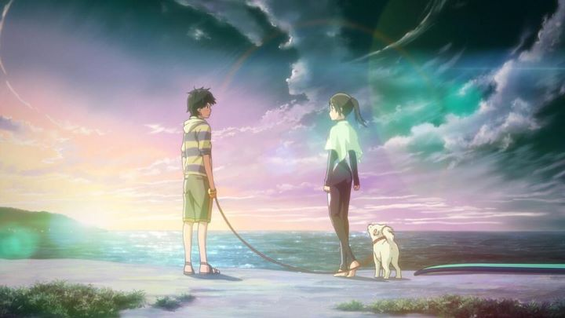

I still remember when I first saw a trailer for the 2012 anime film "Psychic School Wars." I think it was in 2011... at the time, it was a Japanese trailer with no English title. The entire video title and description on Youtube were in Japanese kanji, I couldn't read a word of it. It wouldn't be until much later that I would hear the film refered to as "Nerawareta Gakuen." This was a shifting time for anime in the Western world: licensing anime for online streaming, sometimes within weeks or even days of the Japanese broadcast, was becoming a new and viable business, slowly replacing DVDs and illegal pirated streams. So videos like this would somehow get recommended to non-Japanese speakers.And I instantly fell in love. The movie looked colorful and glossy, like a Makoto Shinkai film, but with cuter characters, and a legitimate budget towards its animation. The story and music suggested a dramatic tale of romance between friends in high school, with an interloper from another dimension. I wanted to see it so bad! After about a year of not even hearing an official English title, I gave up hope and assumed the movie would be lost among a sea of niche anime, even if this was by far the most beautiful of them all. The only news I ever heard about the movie was from a handful of people who saw it, confirming that it wasn't good. But what would they know?It wasn't until about 2016 that Funimation would give a surprise announcement of a Bluray release, using... an English dub from a UK studio, which was released sometime earlier? I suspect there was some special deal involved to releasing this, possibly a priority for Studio Sunrise and a requirement for Funimation to release some other title. Whatever the case, I could finally sit down and watch it. And I can confirm... it wasn't very good.It turns out "Psychic School Wars" is based on a popular Japanese sci-fi novel, and it was already adapted several times into live-action, although this would be the first animated version. This version takes place in the modern day, where a group of friends in high-school hang out, slowly realizing their first crushes among them and trying to live through the embaressment of expressing or surpressing their feelings. One day, a new transfer student appears, and quietly begins offering the power to read minds, causing even further havoc among these impressionable teenagers. At one point, cell phones are banned, a rule managed by the student council as an inferior means of communication.There is a complex story with interesting ideas here, but boy, it is NOT told well. Even at the best of times, it's confusing. I don't care how beautiful it looks, it isn't worth it if the story is bad. Rather, a bad story might be tolerable, but this is downright awful!  But something can be salvaged here. Have you ever heard the saying "so bad, it's good?" At one point, one of the lead heroines is grabbed from swim class, and put on trial by a class full of mind-readers for not joining their side. Soaking wet and stranded on a desk in the middle of the room, her internal cries are heard by one of the lead heroes, also in swim class. He immediately rushes to the classrom in nothing but his swimcap and speedo. When demanded for an explaination or to forfit his phone, he whips out his cell phone from his crotch and throws it to them. While distracted (and disgusted), he picks up the girl from the desk and carries her to safety. When this scene played out, I laughed. I fell out of my chair and rolled on the floor. "Psychic School Wars" is not supposed to be a comedy, but during strange scenes like these, it can be one of the funniest films of its decade. And if watching with a group of friends, pointing out every confusing writing or directorial decision, it's a riot. That is how this movie should be watched.It's a shame the story isn't better. The visuals really do stand out. Maybe too much. The pink and blue world and character designs look too cute, too pretty, and glissen with sunlight and dewdrops. The animation is fluid and expressive, but sometimes so much so that it can be distracting. It's like everything was candy-coated or shaped in glass, coming straight from a factory. Granted, if all anime could look like this, I would be the happiest man alive. But It does prevent it from being the best animation has to offer. The English dub does make the story easier to watch (and since the story does hinge on dramatic confessions of love, the acting is important, for better or for wrose). The music, however, is notably lazy, relying on old classical music on piano for its important scenes a bit too often.Really, there are several elements here that should make "Psychic School Wars" one of the worst anime films ever made. But I had too much fun watching it at its expense. And the visuals are so impressive, it would be worth adding to your collection just to mute the audio and have pretty pictures playing the background of your living room. At the time of this writing, the story was adapted to live-action a total of six times. Maybe we'll see another anime adaption that does the story justice... or at least can be understood.
- "Ani" More reviews can be found at : https://2danicritic.github.io/ Previous review: review_Promare Next review: review_Psycho-Pass_-_Providence